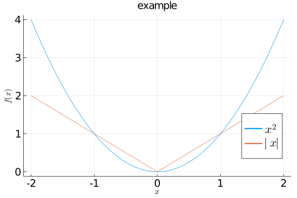

Julia パッケージ関連 備忘録¶
packageモード¶
packageモードの開始
インストール済みpackage一覧の表示julia> ]パッケージの追加pkg> statusパッケージの使用pkg> add package名uising と import の違い(https://qiita.com/cometscome_phys/items/5c98aef4c10a8a575f81)julia> using package名 (または import package名)使えるpackage
IJulia : Jupyter NotebookでJuliaを使えるようにする
LaTeXStrings : LaTeXコマンド
Plots : 図を書く
LinearAlgebra: 線形代数関連
SparseArrays : スパースな配列
NLPModels : 連続最適化モデリング
JuMP : 最適化モデリング
GLPK : 最適化ソルバー
BenchmarkProfiles : Performance Profileを作成してれる
CUTEst : 最適化問題集CUTEst
XLSX : Excelファイルの読み書き
Plots¶
図の書き方の例
x = -2:0.01:2; #範囲を指定 f1 = [x.^2 abs.(x)]; #関数を作成 plot(x,f,label=[L"x^2" L"|x|"], title = "グラフの例" , legend = :bottomright, xlabel=L"x",ylabel=L"f(x)", titlefont=font(14,"Gothic"), legendfont=font(16), xtickfont=font(14), ytickfont=font(14)) #図を表示legend : 凡例の場所を指定, xlabel, ylabel : x軸y軸のラベル名
~fontでフォントサイズやフォントを指定できる (日本語使えるフォント"Helvetica", "palatino", "courier", "times", "newcenturyschlbk", "avantgarde"などを指定すれば日本語も表示可能になる.)
オプションに marker = :auto を加えればマーカーを自動で合わせてくれる.
L"~" と書けばTeXコマンドも使用可能になる.
savefig("***.png");で図を保存することも可能.
参考サイト https://cleytonfar.github.io/posts/using-julia-for-data-science-part-03/ (色々), https://soyukke.dev/entry/plots (等高線や散布図など様々なプロット), https://qiita.com/skiing_LAL10/items/ea028b82fd22fd114667 (凡例の位置),
エクセル読み書き¶
Excelの読み込み＋そのデータの使い方の例
xf = XLSX.readxlsx("ファイル名.xlsx") #ファイルを読み込み x1 = xf["シート名"]; #ファイル名.xlsxのシートを指定 tt = convert(Array{Float64,2}, x1["A:D"]); #x1のA--D列の値をFloat64型の二次元配列としてttに代入
参考サイト https://felipenoris.github.io/XLSX.jl/stable/tutorial/#Getting-Started-1